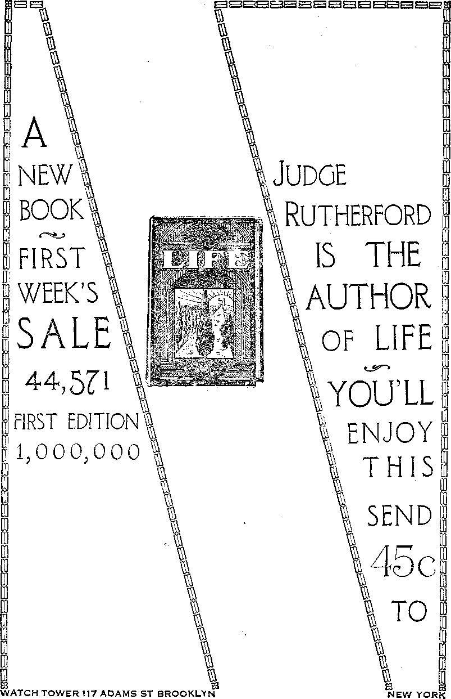

A JOURNAL OF FACT HOPE AND. COURAGE
lllllllllinillllllltlllllllSEBSHSnillilllllllEIIJHIIIIlllHnilllill
INTERNATIONAL BANK
TIRED OF HUMBUG
WAY TO BETTER HEALTH
EVENTS IN CANADA
AUSTRALIA AND LABOR
OPPOSITION TO KINGDOM
radio lecture by Judge Rutherford
■inmiiHimminmiitiimsmimnmiimmHisimismmiii
EVERY OTHER WEDNESDAY
5c a copy $1.00 a year - Canada & Foreign $1.50
Volume XI - No. 265
November 13, 192 9
Contents
Labok and Economics
International Typographical Union
Poverty in the Midst of Plenty
Social and Educational
Prison Reforms in Germany ..............
Divorces Tripled in Thirty Years
Cigarets Destroy Ninety Million Dollars Yearly...... .
Manufacturing and Mining
Fin an ce— Com merge—Transport ati on
A Financial Supergovernment or the World . .
Agriculture and Husbandry Fresh Berries the Year Around
Science and Invention
Improvements in Sea Travel . .
Home and Health
Travel and Miscellany
Religion and Philosophy Opposition to God’s Kingdom
Bible Question and Answer..............
The Children’s Own Radio Story
Published every other Wednesday at 117 Adams Street, Brooklyn, N. Y., U. S. A., by WOODWORTH, KNORR & MARTIN
Copartners and Proprietors Address: in A dams Street, Brooklyn, N. In, V. S. A, CLAYTON J. WOODWORTH .. Editor ROBERT J. MARTIN .. Business Manager NATHAN H. KNORR .. Secretary and Treasurer
Five Cents a Copy—SI.00 a Yeah Make Remittances to THE GOLDEN AGE
Notice to Subscribers: We do not, as a rule, send an1 acknowledgment of a renewal or a new subscription. A renewal blank (carrying notice of expiration) is sent with the journal one month before the subscription expires. Change of address, when requested, may be expected to appear on address label within one month.
Foreign Offices
British .............34 Craven Terrace, London, W. 2, England
Canadian . . .........40 Irwin Avenue, Toronto 5, Ontario, Canada
Australasian * » .7 Beresford Rd., Strathfield, Sydney, N. S. W., Australia South Africa ............ 6 Lelie Street, Cape Town, South Africa
Entered as second-class matter at Brooklyn, N. Y., under the Act of March 3, 1879.
Volume XI
Brooklyn, N. Y., Wednesday, November 13, 1929
Number 265
Chop Suey
AT NIAGARA FALLS three boys were sleeping in a playhouse when their candle kicked over and set the house afire. A cat scratched the face of one of the boys, waking him up and thus saving the lives of all, including the cat.
IT IS said that the number of clairvoyants in the city of Paris can not run far short of thirty-five thousand. They pass under the various names of astrologists, fortune tellers, occultists, hypnotists and prophets.
THE largest potato cellar in the world is in Scott County, Kansas. It holds 225 carloads at one time. The farm from which these potatoes are harvested has rows a mile long and covers eight square miles of land.
IT IS surprising to learn that twenty-five thousand persons are killed yearly in accidents which take place in their own homes. This amounts to one-fourth of all the annual accidents in the United States.
HPHE transfer of the Ford tractor business to Cork, Ireland, has had a vast influence all over the south of Ireland. Four thousand men working at good wages have been a real help to the city and community. Tractors are now being shipped from Cork to all parts of the world.
CANADA has found more coal, a bed of lignite twenty feet thick, underlying an area a mile long and half a mile in width. The provincial government of Ontario has closed the, area, and immediate steps will be taken to develop the possibilities of the new fuel.
EGYPTIAN officials have just paid a call of respect upon an Arab 153 years of age, living in Fayum, near Cairo. This man was born in 1776, the year of the American Declaration of Independence and when Napoleon was still only a young artillery officer.
GERMAN prisons now grant a two weeks’ vacation to long-term prisoners with unusually good records, and any prisoner, near the end of his term, may get employment outside, to learn a trade, provided he spends his nights in the cell.
rpHE announcement has been made that hydrogen has been split into two gases, parahydrogen and ortho-hydrogen. This announcement, if correct, may be the first step in splitting the atom, and may necessitate the rewriting of all the chemistry textbooks.
World Is Eating Less
A HUNGARIAN economist declares that human beings are eating fifteen percent less than before the World War, eating less bread, flour and meat, but more milk, eggs and vegetables. He finds that this change in diet is producing agricultural difficulties the world over.
THE 76,000 men that go to make up the International Typographical Union have expended twenty million dollars to reduce hours of labor, ten million dollars in pensions to union printers, five million dollars in death benefits, four and one-third million dollars in the maintenance of a printer’s home, and three hundred and seventy-one thousand dollars for trade education, almost all of it in the last twenty years, and all out of their wages.
THE oldest movie actor in the United States is William H. Taylor, now over 101 years of age. Six weeks before he obtained his present f employment he started taking singing lessons j to improve his voice for the talking pictures. 1 He does not wear glasses, and can read the J finest print.
AN ODD circumstance, reminding one of Israel’s experience in leaving Egypt, is that : / when the Arabs were recently on the warpath 1 in Jerusalem the professed Christians sought 1 protection by marking the door posts of their . homes with crosses. This, however, may be only ' propaganda or a newspaper story.
A DOG is unofficially on the pay rolls of both f, the Virginian Railway and the Norfolk &
Western at Salem, Virginia. Every day he carries reports from one office to the other, and if the reports are not ready on time he knows it, •' ; and barks until the business is turned over to him.
j: i
i No White Bread in Portugal
PORTUGUESE authorities, anxious to maintain the health of the citizenry of the coun-|y ' try, have promulgated edicts which now make it impossible to secure any white bread in the c । country. Only the healthful dark-brown loaf containing the whole wheat is to be found in the I' । markets.
( rpHE United States Public Health Service foresees the end of the mosquito. A blower has now been invented by which one man in a ■ 1 rowboat can dust a path 525 feet wide with a ‘ ; mixture of paris green and hydrated lime, and good-bye mosquitoes. The cost is about fifteen 1 cents an acre.
AS THE hours of daylight lessen many farm. j. ers have arrangements by which they turn ; i ।. on lights in their henhouses an hour or two be-i U fore sunrise and an hour or two after twilight. ; i p The hens keep awake, eat more, and lay more, i i It is found profitable financially, and not inju-। rious to the hens.
A PPLICATION of the Mendelian law of inheritance is working out wonderfully in the development of new varieties of sweet corn and the strengthening of old varieties. Boards are now made from cornstalks,.the entire operation taking only fifteen minutes from the dry stalks to the completed boards.
FOR overloading the steamer Vestris a mere
matter of seven inches the Royal Mail Company stocks have gone down twenty million dollars in six months. That is because the British people know the company will have to make good for all the losses of human life and property clue to the overloading.
NEW BEDFORD, Massachusetts, has a woman, now seventy-one years of age, who has worked in the one mill for sixty-four years. She started work as a sweeper in the mill, in June, 1865, at which time she was seven years of age. She is still in good health and working every day. .
A GERMAN business man received by post a carrier pigeon with a demand that he tie a five-thousand-mark note to the bird’s leg and release it, on pain of death. He did as told, but had an aviator trail the pigeon; and thirty minutes after the pigeon landed, the blackmailer was in jail.
BECAUSE ten out of sixty-one wealthy Hungarian merchants who came to study American business methods did not have fifty dollars cash on their persons, they were sent to Ellis Island, despite the fact that they had letters of credit showing them to be abundantly able to pay their way. Official stupidity de luxe.
SINCE 1926 the number of civilian airplanes in operation in the United States has increased from 2,700 to 8,064, an increase of over two hundred percent. Seventy-eight airplane firms produced 4,886 planes during 1928, and the indications are that the production for 1929 will be much greater.
NEW YORK aviator’s engine began to miss. He looked for a place to alight, failed to find it, and landed safe and sound in the top of a tree. A couple o'f hens under the tree died of fright, but these were ‘the only persons’ injured. They objected to the size of the bird landing in their tree.
ajor George P. Ahern, forest authority, Washington, D.C., declares that in eight
years the South’s timber will be sufficient only for its own needs, and forty states will then look to the Pacific coast, the last great stand of timber in the country. Reforestation soon is absolutely necessary. '

USE has been found for eelgrass, which is found in great quantities off the coasts of the maritime provinces of Canada. This grass, which is a great inconvenience to fishermen, because it clogs their nets and propellers, is being worked up into mats. It is fireproof, soundproof and non-verminous.
ETROIT is now spending more than two million dollars a year in the collection and destruction of its garbage. Henry Ford has just made an offer to' collect and destroy this garbage without cost to the city. He expects to recover enough grease and other by-products to make the project profitable.
EW YORK is going in for new-style menus.
Instead of merely a name and a price, the guest is shown a handsome picture of what his food will look like when it comes on the table. The method is popular and is gaining ground. It makes work for artists and dignifies the work of the chef.
NEW religion, known as Caodism, has made its appearance in Indo-China in the past four years. It is said to be a hodgepodge of all religions, and includes worship of the Devil as one of its features. It is alleged to have gained two million adherents in the short time it has been in vogue.
egretary of Labor Davis maintains that about 86 percent of the people of the United States are poor, and a door to door canvass of any community will show that there is a great deal of truth in his statement, despite the great number of automobiles in use. That this should be true in the richest country in the world is a great disgrace.
T N THIRTY years, in the state of Michigan, -!• the number of divorces to a given number of marriages has tripled. Thirty years ago less than ten percent of the marriages terminated in divorce, but in the year 1928 there were 10,615 divorces and only 37,300 marriages, showing that nearly one-third of the marriages now turn out to be failures.
anta Claus actually came to Mobile recently. He did not bring anything with him except an appetite and plenty of self-assurance. He climbed down the chimney, frightened a family half out of its wits, and parked himself on the kitchen stove, where he indulged-his appetite, eating a box of cakes. Santa turned out to be a bear, and was captured by the police.
ERU is throwing open the upper reaches of the Amazon River for settlement by Europeans. Several hundred Polish and Austrian families have already arrived, and it is anticipated that at least ten thousand Polish families will begin life in Peru within the next eight years. Much of the land is ready for colonization, while in other places it needs to be cleared.
IN LONDON there are two bakeries side by side. One of these advertised in his window, “We serve bread to his majesty, the king.” His competitor put a card in his own window, “God save the king.” This is more hopeful than two of the signs that Dennett of restaurant fame once had on his walls in New York. On one sign Dennett is alleged to have advertised, “Butter cakes, three for five.” These cakes were known to be tasty but indigestible. On another sign nearby was a Scripture text, “Prepare to meet thy God.”
0 TIDE over the present situation in Stam-boul, Turkey, a new law has gone into effect that each family of wealth must take under its wing one very poor family and see that its necessities are somehow met. It may assist directly or by procuring employment; but it must assist, and must see that real suffering for lack of life’s necessities does not arise.
HE Church of England draws more than a million dollars a year from mining royalties and is financially interested in keeping wages down and profits up. It is also the owner of hundreds of flats in a section of London which has a very bad name with the London police and is known as one of its worst crime spots.
OME of the new imitations of damask tablecloths start out wonderfully well. They have flannel backs, are hemstitched all around, and possess all the elegance of appearance of a genuine damask cloth. There is a slight odor when new, but this soon vanishes. The new tablecloth material requires no laundering except to wipe off stains with a damp cloth.
EXPERIMENTS show the likelihood of being able to have fresh straw’berries and raspberries on the table the year around. The method of freezing berries in barrels, kegs or cans, called the frozen-pack or cold-pack method, may be extended to smaller containers suitable to household use, and in that event fresh fruit of any kind can be had anywhere the year around.
HE late Justice Brewer, of the Supreme Court, once said: “It is a mistake to suppose that the Supreme Court is either honored or helped by being spoken of as beyond criticism. The life and character of its justice should be the object of constant watchfulness, and its judgments subject to the freest criticism. The time is past in the history of the world when any living man or body of men can be set on a pedestal and decorated with a halo.”
HE largest combined mower and thresher is operating near Lethbridge, Alberta. It cuts a swath thirty-four feet wide and daily transforms one hundred acres of standingwheat into three thousand or more bushels of grain ready for the elevator. This combine is one of seven of the same size now in operation in the same district.
HE cotton picker is a success, as far as the replacing of human labor is concerned. It picks 300 to 400 pounds while the average handpicker in California picks 168 pounds. The cotton is picked cleaner, adding $10 a bale to the value of the harvested crop. A one-horse-power gasoline motor operates the pickerheads, which extend ten feet on each side of the machine.
O GOOD was the beer made by a California youth that he and all his companions landed in jail. The beer landed there too, and blew up, bottle after bottle, to the disappointment of the officials, until it was all gone. The amateur brewer had to come into court and tell how he made it and then receive a sentence requiring him to attend church regularly for two years.
CHANCE visit of a young mountaineer to
President Hoover’s camp on the Rapidan
River showed that neither he nor his parents, and practically none of the inhabitants, young or old, in the mountain community, could either read or write. This was within an hour or two by automobile of the capital of the wealthiest country in the world.
NE of the most interesting items of the Graf
Zeppelin’s trip around the world was her direct connection by wireless with the Byrd Expedition in Little America, Antarctica. Messages were repeatedly exchanged. The Byrd Expedition watched the progress of the Zeppelin with keenest interest. At the time the messages were exchanged it was forty degrees below zero in Antarctica. The Graf Zeppelin’s record of 21 days 8 hours 26 minutes around the world is 2 days 6 hours 55 minutes better than any previous record.

OTHING about the shark is wasted. His skin makes a soft, tough leather. His liver becomes cod liver oil or margarine. His teeth are currency in the South Sea Islands. His fins go to China. Pigments are derived from his gall, and drugs from his pancreatic glands. The meat is rock salmon. Glue, dyestuffs, polishing materials, and food for animals are also obtained.
HE San Francisco Examiner sent a fifteenyear-old boy into four stores to purchase wine tonic, and in each case he came out with a bottle of drinkable liquid containing twenty percent or more of alcohol. These tonics are just wines that have been medicated with sufficient drugs to enable them to get by the prohibition act. This form of booze is sold in San Francisco by the thousands of bottles.
NTIL 1875, only fifty-four years ago, Britain had no supervision over her ships.
Then an honest man, a man with an idea, Samuel Plimsoll, got on his feet and demanded that the government give some attention to a scandalous situation which was sending hundreds of men to watery graves every winter. He had to apologize, but he won the fight, and Britis7' laws respecting sea travel are what they are today because of Plimsoll. .
OT only does the cigaret business most wretchedly and miserably underpay its help, and not only has it ruined the youth of the country, and is now ruining the girls as . well as the boys, undermining their health and destroying the prospects of another healthy generation, but cigarets destroy ninety million dollars’ worth of property every year. This money has to be paid by the industrious and frugal, many of whom despise the cigaret business and everything and everybody connected with it. In view of the fact that cigaret stubs are forty times greater fire hazards than cigar stubs, the last cigaret inch is now being chemically treated so that it will not burn readily. This will still further hasten the deaths of the smokers, and increase life insurance costs.
BOY thirteen years old who wandered away from camp and was lost for over a year in the wilds of northern Quebec has been found and returned to civilization. An older brother who was lost with him died two months before the discovery took place. The boys had only two matches with them and kept a fire burning constantly during the entire time. They lived on roots, berries and fish bones.
T MPROVEMENTS in sea travel are an automatic helmsman which is intended to keep the ship on its course regardless of winds, currents or tides, an automatic SOS receiver which rings bells in all parts of the ship, an automatic lookout which rings a bell when any object crosses its path, a device which gives Warning of the presence of smoke or fire, a device for lowering lifeboats at any angle, and a gas for imparting immunity from seasickness.
dwin Baird says truthfully that there is nothing heroic about gangsters, that they are as a rule cowardly,, illiterate, treacherous and without honor of any kind. Baird says that when Dion O’Banion was slated to die, three guerrillas were assigned to the job, and while one grasped his right hand in apparent friendship the other two riddled his body with bullets. The gangster’s favorite method of getting rid of a fellow bootlegger is to shoot him in the back of the head. In a real man-to-man fight he is simply not there.
N HIS return to Germany after making a careful survey of American jails, a noted criminologist, Professor Liepmann, said: ‘‘There are no words to describe the almost medieval conditions in these jails. Usually no distinction is made between those who have been sentenced and those who are awaiting trial and perhaps are innocent of any offense. There is no provision for giving the prisoners adequate work or exercise in the open air. In the matters of light and air, sanitary and hygienic conditions, the cells can, without exaggeration, be compared with the stalls of animals, and, at that, to the neglected stalls that might be found in country districts at least half a century ago.”
WE HAVE just noticed the following item in one of the daily papers:
CLUB ALUMINUM UTENSIL. For year ended June 30 the Club Aluminum Utensil Company reports a consolidated net income of $3,184, after depreciation, inventory losses and federal taxes, equal to 1 cent a share on 271,240 shares, against $853,530, or $3.14 a share in preceding year.
One noticing this report, that earnings of one of the largest manufacturers of aluminum cooking utensils had had their earnings reduced in one year from $3.14 to a share, would naturally conclude that something has been -happening in the aluminum cooking utensil business. Perhaps so! Perhaps so! And if so, the result, in the end, will be for the benefit of the fathers and mothers and boys and girls that will live longer and be more robust and happy; so it is worth the price.
THE San Antonio (Texas) Light publishes a picture of G alusha M. Cole, California pioneer, now 103 years of age, former friend of Lincoln and Douglas. Mr. Cole enjoys travel, and visits all parts of California alone.
In the picture in Light Mr. Cole is represented as reading Judge Rutherford’s latest book, Life, and that too without the aid of glasses. Well, he selected a good book. It ought to keep him young and insure his being of the 'millions now living that will never die’.
In spite of his miserable comforters Job came out all right in the end; and just as he finally came to rest and peace, so the human family, in spii ) of all its miserable comforters, is coming fori .1 into the golden age of joy, peace, and divine blessing foretold by all the holy prophets. In Life the author tells all about it.
By the way, Judge Rutherford’s books are getting around everywhere. The other day we saw a full-page advertisement of Listerine in Capper’s Farmer, and in the forefront of the picture at the head of the advertisement was a cut of Deliverance, with the title plainly visible in the cut.
FpHIS book shows that Serbia knew in advance -®- of the murder of the archduke of Austria, and that England went into the war not because of the violation of Belgian neutrality, which she had expected, but because she had previously agreed with France to do so. The book shows that no hand was ever cut off a Belgian child, no nun ever violated, no woman’s breasts cut off, no baby bayoneted, and no soldier or civilian ever crucified by the Germans. And it was the French, and not the Germans, that first used poison gas, and the British were the first to bomb towns from the air. The war to end militarism has been followed by the greatest expenditures for militarism ever made in the history of the world. The world was to be made safe for democracy, but it has now more dictators than at any other one time in the history of man.
More About the Grape Cure By Dr. Rollin 'Jones
IT IS with much interest that I have been reading The Golden Age, even from its first issues: I appreciate the spirit that has been manifest throughout, and am pleased to note that truth is its standard.
I have carefully noted in the August 7 issue an article entitled "No Magic in Grapes”, by Dr. Herbert M. Shelton. After having given the article a few thoughtful readings I sought to refresh my mind as to the general spirit of the articles coming from his pen, to see if they are constructive. I re-read the "Death by the Serum Route” in your issue of April 17, and "More About the Ehret System” in your issue of May 29.
The doctor does not owe me a cent for using my name in the first article referred to above, for it is a good rule not to take or give offence in anything; it is also a good plan to 'do nothing through strife or vainglory’.
What has been published in The Golden Age. under my name was submitted that some sufferers might be helped thereby, and not offered from the pen of an enthusiastic novice as an experimental proposition, nor as propaganda to raise the hopes of sufferers "to the seventh heaven ... to have them dashed down to the very depths of despair”.
As stated in my article appearing in the December 26 issue of The Golden Age, "we have had several come to our Florida office suffering from the loathsome disease, cancer, who have been reclaimed that they might continue their citizenship here for a few more years.”
Since the issue is forced I take pleasure in enclosing herewith the names and addresses of a sufficient number of those who have been successfully treated by our method to make it worth while to give space to the article on the Grape Cure, that at least a few others might be helped thereby.
These names and addresses are given that you might know the facts, but not for publication, of course. I shall be glad if you advise Dr. Shelton of the results of your investigation, if you desire. [Seven names and addresses enclosed, two of them physicians.—Editor.]
The writer asserts that natural hygienists, naturopaths and others have never claimed that the “grape diet will cure cancer”. No one should claim to work miracles, but we are pleased to advise that two of those whose names and addresses I have submitted, who successfully underwent our treatment, are graduate naturopathic physicians, licensed and practising within the laws of the state, having passed a satisfactory examination before the State Board of Naturopathic Examiners, which we also have done.
All that has been said of the grape that could be construed “magical” appeared in my article in the December 26 issue of The Golden Age; viz., “We recognize the grape (in its natural state) the greatest normalizer of human tissue on earth.” We cheerfully agree that there are other foods which can be combined in making both a cleansing and constructive diet, and some of these were mentioned in both of the articles from my pen referred to above; and any worthwhile naturopathic physician knows of them and their value in the various cases.
The kindest construction that I can place upon the position taken by Dr. Shelton in his criticisms of my article is to conclude that his information was only hearsay. What other decision could logically be reached when I note that I am, by him, charged with making the statement that the “grape diet will dissolve gallstones in about six weeks”, whereas I specifically state (in my article under his criticism) that in treating for gall-stones one should “confine himself to a raw vegetarian diet, chiefly of figs, onions and lettuce (using two fair-sized red onions daily)”? Frankly, dear editor, I never before heard of such fruit and vegetables growing on a grape vine; but I have successfully treated those who had been diagnosed, X-rayed and found to be gall-stone patients. I do not have any disposition to question the doctor’s position, that to him “there is no known method of dissolving gall-stones”.
All the good that any of us can do is small indeed when compared with the needs of the groaning creation. The all-wise God did not give any of us great things to do, because He knew we are all so small. When His government is in full sway it will bring life. 'No one will say, I am sick.’
900 Books in One Building
"EWER try canvassing for Judge Rutherford’s books in a big office building? The best wTay is to leave the building superintendent till the last. Then you can both appreciate your visit better! Instead of stopping to bow and scrape at each information desk, the best way to do is to quickly pick out some likely-looking man and bolt right on in and say to him, “May I speak to you a minute?” Whichever way he answers, “Yes,” “No,” or “What is it you wish to see me about?” start right in with your canvass and make it good and snappy.
In the Standard Oil Building, 26 Broadway, New York, H. W. Stackhouse placed 220 books *nd booklets. Very good! The Binghamton Press Building yielded 92 bound books and 138 booklets in two days. Not so worse!
But now along comes Carl Ewell, of Cleveland, ■with a photograph of the Union Trust Building and something written on it that makes the above records look like that of little children playing at a picnic. It just says: “Five hundred bound volumes and four hundred booklets in seven weeks, from the twentieth floor to the basement, from the former district attorney to the chief engineer.” The building has 2,800 windows in it; so it is no wonder it took seven weeks to canvass it. More power to you, Ewell! If anybody has a better record, send it on.
The Way to Better Health By H. W. Newcomb
MOST of us humans after passing the age of 35 or 40 years begin to realize that youth and vigor are beginning to slip away from us. Aches and pains appear more frequently, and then we begin to give more serious consideration as to how we may preserve our health.
We find that wild animals live to seven times their bone maturity, and if man did so he would live to be 200 years old. But he does not; so we must conclude that there is something radically wrong with our mode of living.
Some then resort to physical torture, pardon me, culture, only to find that the vitality is getting less and less, so that it becomes more difficult to keep up the exercises that prevent the excess weight from developing.
Others resort to excessive fasting, drugs and fads to accomplish this end, only to find that they pay dearly for their trouble. Then they begin to wonder if it is worth while trying to hold off the “Grim Reaper’-’. Why not let us eat, drink and be merry, for tomorrow we die ?
We are living in a wonderful time: a time in which, Daniel tells us, “knowledge shall be increased”; and as we get a clearer insight into the times in which we are living, we find that there are some things that can be done that will cooperate with nature in resisting disease and slowing down our loss of vitality.
Our bodies are wonderful organisms. David said: “I am fearfully and wonderfully made.” Every bone, every joint, every muscle and every nerve has its proper position and function.
If some of these get out of place and do not function properly it is soon manifested in our general health and vitality. Just one joint of the vertebra stiffening up and bringing pressure upon the nerve centers will bring about a draining of the suprarenal glands with the result that our vitality will be used up faster than we can manufacture it, and the first thing we know we begin to get shaky and slow down, so that it is hard work to drag ourselves through the day.
Can this be overcome? Surely so. Just place yourself in the hands of a first-class osteopath or chiropractor, and, frequently, within an hour, or so after the first adjustment you will begin to feel your vitality coming back.
Is this all we shall have to do to keep well ? No. The very best organism or machine that we can possess, if not properly taken care of, will soon find its way to the scrap heap.
As we go about in our daily lives we use up the tissues of our body. Divine providence has so arranged that, we being mortal beings (not immortal, as the “god of this world” has gotten the majority of mankind to believe), it is necessary for us to depend upon outside substances to sustain life.
The air we breathe, the water we drink, and the food we eat, all play their part in sustaining life.
It does not require much intelligence to provide fresh air and plenty of water for this machine of ours; but when it comes to food, then we get into difficulty. Most of us allow our sight and taste to guide us in this all-important item. We cook our foods to gratify our taste and appetite, instead of choosing them to meet our bodily requirements. We do not seem to realize that it is not merely the food we eat, but the food we digest, that is of benefit to us. An ounce of cabbage or spinach properly digested is more beneficial than a pound of undigested and unassimilated starch, sugar or protein clogging up the system and using up vital energy in expelling it from the body. What an expensive experience has been ours as a result of this unwise course! Sickness abounds, decay is ever present, and the M.D.’s and dentists have waxed rich at the expense of suffering humanity.
Then, too, how the conscienceless profiteers have done their best to maintain this devilish condition of things by a systematic propaganda advertising devitalized food in fancy packages to appeal to our degenerated appetites and weaknesses.
Some are beginning to wake up and are seeking to find out what is helpful to nourish our bodies and what is injurious to them, and so we find that ‘knowledge has increased’ in this respect.
We read articles about calories, vitamines, carbohydrates, starches, proteins and what not, and, while it ‘listens good’, the average layman scratches his head and wonders whether these things grow on trees, or whether they have to be cooked, or what it is all about anyway; with the result that we continue in the same old rut because we have gotten the habit.
The Golden Age and some of the osteopathic publications have published some interesting
articles on Dietetics that I will endeavor to simplify and bring to your attention in such a way that it will be easy to get out of the rut and supply this machine of ours with proper fuel to keep it reasonably free from breakdowns.
One of the best helps to good health and good digestion is to develop a sunny disposition. Do not worry over your diet, but do the best you can to follow the suggestions given.
Avoid the use of stimulants, intoxicants, drugs and patent medicines.
Avoid the loss of organs of the body by surgical operations. Each organ has its function; and if you destroy it, you handicap your machine just so much. If the organs are diseased, heal them by correcting your diet.
Avoid the use of aluminum cooking utensils and alum baking powders, as these are injurious to your health, poisoning the blood stream and causing a large percentage of the stomach trouble that we are afflicted with today.
Sleep on the right side or flat on the back, with the head toward the north so as to get the benefit of earth’s magnetic currents.
Avoid serum inoculations and vaccinations, as they pollute the blood stream with their filthy pus.
Do not eat when ill, overtired, angry, worried or despondent.
Do not drink anything excessively hot or cold or while food is in the mouth.
Stop chewing gum, as you need the saliva for your food.
With these few helps to start with, let us next see what has been found so far in Dietetics that is essential to maintain life.
Animal life lives upon organic matter. Inorganic matter can not become an integral part of man’s cellular structure; and for this reason medicines are of little value, as they are for the greater part inorganic. Then, again, cooking produces chemical and structural changes in food, changing it from organic into inorganic matter.
It is also found that after digestion and absorption food finds its way into the blood stream, so that the condition of the blood is determined by what one eats.
The old method of dividing food into carbohydrates, fats and proteins, and then determining the number of calories one needs, while scientifically correct, is of little or no value, as it offers no suggestion as to what or how a person may eat for health.
It is far more practical to classify food in accordance with their acid- or alkaline-forming qualities, as the blood must be alkaline to maintain health.
Then, again, an alkaline reserve is necessary to neutralize the acids that result from bodily activity. Exercise, including the ordinary process of body metabolism, gives rise to an acid end-product which must be quickly neutralized, otherwise serious results will follow.
That “tired feeling” is due also to errors in diet which give rise to acid toxemia. As an illustration : Starches taken into the body are changed into a form of sugar, and, when fortified by other sugars, such as syrups, jellies, jams, pies, cake and pastries, it requires the expenditure of a great amount of vital energy to get this excess chemically changed into some form of pus so that it may be expelled from the system. Do you wonder that you have that “tired feeling”, colds, catarrh, etc.?
One of the difficulties along this line is that most of us overeat. It is easy to overeat of cooked foods, but, on the other hand, it is almost impossible to overeat of raw foods as Nature grows them. Gradually cut down on cooked food, sugar, starch and protein food, and substitute a sufficient quantity of fruits, non-starchy and raw leaf vegetables to satisfy the cravings of appetite.
Another error we encounter is that of indulging in a mixed diet at each meal. This brings on all kinds of trouble, indigestion, catarrh, gout, rheumatism, high blood pressure, etc.
It is true that we need a mixed diet; but the mixing should be done during the day at differ-■ ent meals, and not at the same meal. The more varied the food in combination at each meal, the longer it takes to digest the meal. Delayed digestion means fermentation and putrefaction. A monodiet is best. Three to five articles of food at a meal is variety enough; and the fewer the articles, the more easily the meal is digested.
Natural food is that which is uncooked, unmixed, and unseasoned. Learn to eat and like it, as it will get you well and keep you so.
Our food is divided into three general classes: proteins,.carbohydrates or sugars, and fats.
Proteins are digested by the hydrochloric acid of the stomach. They are the most injurious of the three, as only a small proportion ingested contributes towards the health and builds tissue and strength. Where the average person needs about 2500 calories daily, only four percent, or about one ounce of protein, is sufficient to meet all requirements. Outdoor workers thrive on even less than this amount.
Now keep this one thing In mind, that three-fourths of our diet should be alkaline-forming foods if we would keep well.
The following chart will give you a general idea of the relative value of some foods:
Percent to 100 Grams
|
Food |
Protein |
Fat |
Carbohydrates |
Acid |
Alkaline |
|
Meats , |
20 |
12 |
14 | ||
|
Eggs, whole |
12 |
12 |
26 | ||
|
Sea Foods |
18 |
14 |
2 |
17 | |
|
Fish |
20 |
8 |
16 | ||
|
Wheat Flour |
11 |
1 |
75 |
9 | |
|
Chicken |
22 |
5 • |
1 |
10 | |
|
Crackers |
10 |
1 |
1 |
11 | |
|
Asparagus |
2| |
1 |
3 |
1 | |
|
Beets |
14 |
10 |
11 | ||
|
Cabbage |
1.8 |
1 |
5 |
5 | |
|
Celery |
1 |
8 |
8 | ||
|
Parsnips |
11 . |
1 |
14 |
7 | |
|
Tomatoes |
' .9 |
4 |
5 | ||
|
Carrots |
1 |
1 |
10 |
11 | |
|
Oranges |
.8 |
.2 |
11 |
6 | |
|
Lemons |
1 |
.7 |
9 |
54 | |
|
Apples |
.4 |
13 |
3 | ||
|
Grapes |
1.3 |
14 |
19 |
7 | |
|
Plums |
1 |
20 |
4 |
You will notice flesh food contains the largest quantity of proteins. '
Fats are common in nearly all food, though fruits and vegetables contain less than the meats. Fats have to reach the small intestines before they may be acted upon by the bile and the intestinal juice which emulsifies them and makes them digestible.
Carbohydrates are formed in large quantities in the fruits and vegetables.
Note well that meats and proteins form an acid residue in the blood, while fruits and vegetables form an alkaline residue and therefore should make up three-fourths of one’s diet. Milk, cream, butter, cheese, yolk of eggs and green leafy vegetables are excellent in alkaline-forming qualities.
Children need calcium to build bone and teeth. Grown-ups should eat sparingly of them unless they want to put on weight. Foods containing calcium and potassium help the body to assimilate carbon foods. Heavy calcium foods are whole grain products, cow’s milk, cheese and halibut.
Goat’s milk is a chlorine food containing calcium, is easily digested and preferable to cow’s milk.
Chlorine foods aid digestion, help keep the body sweet, and keep down the formation of intestinal gas. Heavy chlorine diet is necessary to reduce weight, or in dropsical or rheumatic conditions.
Chlorophyl is one of the best sources of organic chlorine and is found in green leafy vegetables and red meats. Leaf lettuce contains more chlorophyl than head lettuce, which is higher in iron content.
Magnesium foods act as antacid, a cleanser, blood purifier and beautifier. Oranges and the entire citrus family are the best magnesium foods. Oranges are as necessary for children as milk.
Manganese foods are needed for brain, nerve and muscle coordination. Eat six or eight blanched almonds, or their equivalent in bulk in English walnuts, when you feel the need of them.
Potassium foods are needed for muscle tone, and assist peristaltic bowel action, which prevents constipation. Some of them are hops, spinach, prunes, sun-dried olives, dandelion, endive, watercress and figs.
Bread, when yeast-raised, should be from twenty-four to forty-eight hours old. Fresh baked bread is full of gases that are not healthful and some live yeast germs that start a new fermentation in the stomach and small intestines.
Cocoanut-oil oleomargarine is more easily digested than butter. It contains neurol, a lubricant for the brain, nerves, lining of the lungs and bone marrow. Eat cocoanut meat quite often.
Corn is fattening. Cornmeal products may be used in winter by all who wish to add weight, but should be avoided in the hot months.
Eggs. Give children the whole egg; babies and grown-ups, the yolk only. The y Ik contains most of the elements needed by the body. When it is cooked it loses its fluorine, so should be taken raw.
Oats are the only alkaline cereal we have, so that oatmeal and oatmeal bread is advised. Oats contain silicon, which, with fluorine, makes enamel on the bones and teeth. Oatmeal is an excellent raw food, as it is non-fattening and a better roughage than bran. Do not use the three-minute kind. Serve with a little brown sugar, raisins, and whole milk.
Tropical fruit butter may be made from any combination of dried fruits desired except dried peaches with the skin on. Figs, raisins, and prunes or dates with pits removed make a good combination. Run through meat chopper and pack in deep bowl. Use as a spread for bread.
Salad dressing may be omitted entirely, or it may be only salt, or salt and lemon juice, or a french dressing of olive oil, lemon juice and salt. Mayonnaise is permissible for healthy individuals, but should be avoided by invalids and those desiring to keep their weight down.
Whole wheat or whole grain bread contains most of the mineral elements to be found in the body; but remember, it is a starchy food, and govern your consumption accordingly.
Milk is a food, not a beverage. If you use it, eat it.
We should avoid the use of vinegar, as it is used as a preservative. Pickles are never digested. If you want something sour use lemon juice.
Avoid strong tea and coffee, which are stimulants. Also avoid condiments, such as ketchups, chili sauce, mustard, pepper, etc., with the exception of a limited amount of table salt.
Keep away from packinghouse by-products, such as chili, bologna, wieners, head cheese, etc.; also immature meats, such as veal, squabs, young broilers, etc.; and kidneys, heart, liver, sweetbreads, brains, suet and cracklins.
Eat sparingly, if at all, of any canned meat or food, and avoid canned fish, sardines, and especially canned salmon.
Candied orange, lemon and citron peel should be avoided.
Constipation should be corrected by proper diet. Eat enough roughage and bulk foods to insure the proper peristaltic bowel action, and drink plenty of water, up to six glasses a day. Get the habit of going regularly to stool, the first thing in the morning and before retiring at night.
Food Decomposition. Following digestion, nutriment obtained from meat, eggs or other animal food is prone to early and rapid decomposition after passing from the intestinal absorbent into the general circulation via the infra vena cava vein.
Should the cells in any event be unable to use at once the nutriment which has reached the blood, the nutriment decomposes or dries in the blood stream and becomes toxins, high in carbon and extremely poisonous.
The cells need replenishing with both the nerve substance and the ‘driving poweri, otherwise it is impossible for them to free themselves of their carbon waste which remains with the cells, interfering with their normal action and allowing the rapidly decomposing nutriment to remain in the blood, where it becomes dead waste matter.
When a condition like this exists it can be remedied by the use of a grape diet for a week or two. Before starting the diet, fast for three days, drinking plenty of water only during this time. Next eat from two to four pounds of grapes a day, skin and all, except the seeds. These should be taken at two-hour intervals. At night an enema should be taken to remove the toxins from the colon. Concord grapes are the best for this diet, but if not obtainable any other kind will do. No other food should be taken while on the diet; and after it is over with it would be best to change first to green vegetables, and then gradually add what other food you desire. ,
The following chart will assist you in selecting your foods when you wish to mix them at a single meal.
1. The food in any one GROUP may be combined with anything else in the same GROUP.
2. Use any or all desired articles in Group 2 for your noon and evening meals, combining with anything in either Group 1 or Group 3.
3. Do not combine anything in Group 1 with foods in Group 3 at any one meal.
4. All foods, whether fruits or vegetables, are to be used raw whenever possible.
5. A. .mlcs marked (A) should, compose the bulk of your meal.
6. Articles marked (B) are especially suitable for raw salads.
7. Articles marked (C) will combine for fruit salads.
CHART OF FOOD COMBINATIONS
Group 1
|
Starches | |
|
Arrowroot |
Potatoes, Irish |
|
Artichokes |
Potatoes, Sweet |
|
Bananas, yellow |
Rice, natural |
|
Barley |
brown |
|
Cereals |
Rye Bread |
|
Cornbread |
. Sago |
|
Cornmeal |
Spaghetti |
|
Farina |
Tapioca |
|
Hominy |
Whole Wheat |
|
Macaroni |
Bread |
|
Noodles |
. Yams |
|
Oatmeal (A) | |
Use only whole grain cereals, flour and meal.
It is best to eat only one kind of starch at a meal, and in limited quantities.
Starches must be held in the mouth until they are thoroughly mixed with the ptyalin of the saliva to digest. If they are fried this is prevented, making them indigestible, causing fermentation and the formation of gases.
Sweet Fruits
Dates Prunes, sweet '
Figs Raisins _
May be eaten with any food.
Use them as a substitute for candy.
Sugar
Bananas, ripe brown
Brown Sugar
Corn Syrup
Honey
Maple Syrup
Molasses, Cane
Molasses, Sorghum
Causes fermentation w’hen added to Acid Fruits and Acid Vegetables.
Avoid the use of granulated sugar or the habitual use of candy, commercial syrups, jams, jellies, ice cream, conserves, cakes and pastries. .
Legumes
Beans, all kinds dried
Lentils
Peas, dried Peanuts, raw only
Semi-Starchy Vegetables
|
Beets |
Carrots |
|
Corn, green |
Kohlrabi |
|
Onions, matured |
Oyster-plant |
|
Parsnips |
Radishes (B)’ |
|
Rutabagas |
Squash |
|
Turnips |
Best not to eat with Acid Fruits.
Group 2
Non-Starchy Green Vegetables (Con.)
Turnip Tops Spinach
Peppers (B) Swiss Chard
Rutabaga Tops Watercress
Always eat bountifully of salad vegetables (B)
Non-Starchy Green Vegetables (A)’
Asparagus Beans, Butter Beet Tops Cauliflower Chive (B) Dock, Sour Endive (B)’ Leeks (B) Beans, green Beans, Lima
Brussels Sprouts Celery Dandelion (B), Eggplant * Kale
Lettuce (B)’
Parsley (B)’ Raw Cabbage
Salsify ‘ Sorrel
|
twice a day. | |
|
Soups | |
|
Barley |
Rice |
|
Celery |
.Vegetable |
|
Corn | |
|
Mutton |
Fats ' |
|
Pea |
Butter (A) |
|
Thick |
Cocoanut-oil |
|
Bean |
Margarine |
|
Chicken |
Cream (A) |
|
Cream |
Olive Oil |
|
Noodle |
Vegetable Oils |
Children need abundantly of proteins, grown-ups only a limited amount.
Eat nuts with meals only.
Never fry proteins, as frying makes them very indigestible.
Group 3
Acid Fruits (A) Apples (C) Apricots (C) Berries Cherries Cranberries (Not A) Currants Grapefruit (C) Grapes (C) Guavas Lemons Limes Melons
Mulberries Muskmelon Nectarines Oranges (C)' Peaches, peeled (C)’ Persimmons Pineapples (C) Pears (C) Plums Strawberries Tangerines
Use raw if possible, never with sugar.
Eat Melons only as a meal or between meals.
Meats and Proteins
Cheese (A) Chicken Egg-yolk (A) Fish
Bacon
Beef
Beef, Chipped
Beef, Corned Ham Lamb Milk (A) Mutton Nuts Tongue
Most of us overeat of proteins. The body can not use more than -J pound of meat, 2 eggs or | pound of cheese in a day.
Raw protein is most easily digested, boiled or broiled is next best, and roasted is more difficult.
Best to use only one kind at a meal.
The BEST regimen for adults for the day is as follows:
Breakfast. Make this a fruit meal, eating plenty of ripe fruits, with a glass of milk or buttermilk or cottage cheese or an egg.
Luncheon. Make this the starch meal, eating plenty of one kind of starch with plenty of vegetables, both raw and cooked. Do not eat an acid fruit, tomato, rhubarb or an acid-containing dressing on salad at this meal. (Vinegar is an acid.) Best to omit proteins at this meal.
Dinner. Make this the protein meal, eating one kind of protein only, with a large serving of salad vegetables and one or two cooked vegetables and a fruit dessert. Use lemon-juice-containing salad dressing at this meal.
For children, for breakfast give a whole grain cereal, or whole wheat bread or muffins, with cream or butter. Very little sugar, and that should be the raw sugar, not granulated. Honey is the best sugar. Give them fruit between meals.
Gradually change from your old habits, giving your system a chance to adapt itself to the new regimen.
British King Tired of Humbug
A LONDON dispatch in the China Press says in part:
The king’s illness, it is stated on all sides, has completely changed his outlook on life. The long months of isolation in the sickroom, first in London and afterwards at Bognor, have made King George “hungry for human companionship and anxious to meet as many people as he can in the-future. ”
“When I am better,” King George remarked to a circle of friends who visited him in his convalescence, “I am going to abolish many of the artificialities that have hitherto separated me from other human beings. I have come to realize during my illness more than ever before that a king is a very ordinary human being, but that the things that distinguish him from others and keep him out of contact with the world of reality are nothing but a set of extraordinary and antiquated rules and regulations which in many instances have very little sense to them. And I mean certainly to bring a change in the situation, once I am fully myself again.”
The queen is fully converted to the king’s new point of view. And King George, in turn, is now able to sympathize with and understand the dislike of the Prince of Wales for ceremony and the endless drudgery of court life with its thousand and one formalities. The entire royal family, in fact, is unanimous in the opinion that 75 percent of it is all silly and senseless and belongs to another age.
The first practical effect of this revolutionary change in royal psychology has been a personal order from King George that gives the servant staffs at Buckingham Castle, Windsor Castle and Sandringham the full benefit of an absent court, which used to mean a period of “disciplined idleness.” Disciplinary regulations at all royal castles are henceforth relaxed.
A Financial Supergovernment of the World
(Reprinted from the National Tritune')
FT1HE reparation experts assembled at Paris have announced a plan for the formation of an international bank of settlement. This was no sudden inspiration. It has been in the making since the ending of the World War.
Business in the United States has become more and more under the domination of our great banking institutions. Our political administrators are hypnotized by the almighty dollar. During the last presidential campaign both candidates sought the protecting wing of our large financial institutions. The American mind is now concerned with profits and increasing luxuries.
The first duty of the Government should be to consider the independence, welfare, and happiness of its citizens. There is an ever-increasing divergence between the financial and industrial interests of our country and our humanitarian interests.
Bankers look upon individuals as machines for production of profits. When worn out these individuals are unfeelingly consigned to the human scrap heap.
We are now facing a super-bank more powerful than any political organization in the world. It is well to stop and read the signs of the times.
The United States Government entered into debt settlements with the countries of Europe based upon an alleged ability to pay. Our people were told that foreign countries were settled with to the full extent of their ability to pay their indebtedness. On top of it our private banking institutions have loaned fourteen billions of dollars in Europe. How is this money to be repaid if they already owed to the United States Government a sum equal to their ability to repay?
Our ambassadors to other countries should concern themselves primarily with the interests of American business or with political considerations. Witness the recent appointment of the ambassador to Mexico, a member of our own super-bank, J. P. Morgan & Co., whose interest is to develop Mexico as a field for future investments rather than to conserve the rights and privileges of individuals and companies engaged in business there.
When representatives of the governments concerned were called together in the reparations conference at Paris we did not find our own Secretary of State nor Baldwin, of England; Poincare, of France; or Mueller, of
—AND THB PROFIT!
Germany. Those gentlemen would have been concerned with the political problems of the nations they represent. We find, however, Moreau, governor of the Bank of France; Dr. Schacht, head of the Reichsbank; Sir Joshua Stamp, director of the Bank of England, and Mr. Morgan, of our own J. P. Morgan & Co., and Owen D. Young, head of the General Electric Company. It is true there were present repre-sentatives of our Federal Reserve System, but this was a matter of so much importance to the international bankers of the world that we
sent as our official representatives the chiefs of our greatest private bank.
The recent $100,000,000 Rumanian loan was not left to competition among the national units of capital. On the contrary, it was divided into 12 blocks and apportioned to investors in Austria, Belgium, Czechoslovakia, England, France, Germany, Holland, Italy, Rumania, Sweden, Switzerland, and the United States, conclusive evidence of the power and control exercised by international bankers upon the financial institutions of the world.
The three Cabinet portfolios of this Government which are of particular concern to our
D THE PROFITEERS
great financial institutions are Secretary of State, Secretary of the Treasury, and Secretary of Commerce.
Our President appointed as his Secretary of State a man he had never seen, but who had been a partner of Elihu Root (the man now unofficially in Europe endeavoring to devise a scheme by which this country can enter the World Court), one of the great bankers of America for Secretary of the Treasury, and a great industrialist for Secretary of Commerce, a man, according to newspaper reports, the President never met but once.
It is a curious but significant fact that the covenant of the League of Nations refers to questions of arms, colonies, communications, health, labor, opium, and white-slave traffic but never once refers to international finance.
The proposed international bank of settlement is to be a sort of federal reserve system for the financial world—a super-bank. It will be controlled by no law. It is beyond laws. Its development will be secret but tremendously powerful and beyond the reach of Congresses or Parliaments.
Bankers have become internationally minded. Their interests compel that. Is it any wonder they sent their chief legal adviser to Europe to devise a scheme whereby we might enter the World Court? It is their desire to have that court strengthened by our adherence thereto to control the political affairs of the nations of the world. At the same time they will have free hand without check as to their operations. Their power and influence are beyond the imagination of the ordinary citizen who prides himself that the people control the Government of the United States. The international bankers dream of a capitalistic world empire. It is desirable to them that our Government adhere to the World Court and that all the governments of the world be submissive to its decrees while they remain aloof, beyond the control of any government.
■--OF OUR CIVILIZATION
This financial super-bank will not emerge fully formed from the present conference, for that might alarm the world. Gradually, insidiously, but nevertheless progressively, it will grow until the dream of international bankers has become a reality.
Events in Canada By Our Canadian Correspondent
SURELY 'the god of this world’, as Paul declares, 'has blinded the minds of them that believe not the truth’; and no better evidence thereof could be found than the ease with which the clergy can play upon the silly superstitions of the people even in the city of Toronto, which is generally recognized as one of the best-educated cities in the world. The great number of automobile accidents that are occurring everywhere is putting fear into many peopld, and the Catholic clergy, like the Protestant clergy, ever alive to take advantage thereof for their personal gain, have conceived the idea of blessing (?) the cars to prevent such accidents. The Toronto Daily Star, under the caption, “Blesses 3,000 Cars to Prevent Accidents—Vast Crowd Witnesses Ceremony at Mt. Carmel Church— All Sects Present—Baby Carriages, Bicycles and Horse-Drawn Vehicles Included in Benediction,” has the following to say:
Blessing upon the citizenry of Toronto, more particularly with respect to the prevention of auto accidents, was invoked by Rev. Stephen Awad, following the celebration of high mass Sunday morning in the Church of Our Lady of Mount Carmel.
The occasion was the solemnization of the feast of St. Christopher, patron of travellers.
After the mass Father Awad, accompanied by acolytes, proceeded to the front of the church where for two hours, with the relic of St. Christopher, he blessed over three thousand automobiles, trucks, baby carriages and bicycles, having previously blessed lake vessels, including interlake steamers and pleasure yachts at various Toronto wharfages.
Cars from every province in Canada and almost every state in U.S.A, were lined up for the blessing, and the assistance of a squad of police was necessary to keep the traffic moving.
Under the heading, “Pagan Rites at Home,” one of the local papers, Hush, comments on the blessing farce, saying:
In Africa and in the remote parts of the uncivilized world the “Voodoo Man” or the “Medicine Man” is idolized by the Pagan tribes. They bring to him the choicest fruits and foods and pile at the door of his hut commodities for his every need. In return he gives them charms to tie around their necks, wear in their ears, or hang from their nose, with the assurance that these blessed charms will drive away the evil spirit of the jungle, make them immune to fever and save them from the tiger’s claw.
In civilized Canada, we notice thousands of motorists, jamming the streets leading to the Church, all crowding, pushing and shoving to receive a little piece of metal with the image of a long-dead saint upon it, believing in childish confidence that the occupants of their automobile, bicycle, truck or other conveyance will be safeguarded from accident.
Alas! indeed. Our Pagan friends are indeed brothers under the skin.
Speaking of rum-running and Canada’s closed eye thereto because of the gain she derives therefrom, the Toronto Star in a recent issue contains an editorial article entitled, “Canada is Compromised.” It reads:
Canadian citizens who know what is going on in border communities feel their country is humiliated by the countenancing by its officials of the criminal gang engaged in smuggling rum into the United States.
Canada has fine words for the United States. She assures the government of the republic she has no sympathy for rum-running. She has even entered into a treaty for the suppression of smuggling. Her officials say they have done everything within their power, short of refusing to clear cargoes of liquor for the United States, to cheek the flow of liquor across the borders, and they add that the export of liquor, being legal, is being given no special facilities.
The facts do not support representations of that character. The information about liquor clearance supplied by Canada to the United States officials has been fictitious and valueless although the government could easily have taken steps to obtain information that would have been reliable. The Canadian customs department has made regulations to suit those engaged in the rum-running business and has cashed in on that business for the benefit of the national treasury of Canada.
Our citizens ought to know the extent to which the Dominion is being compromised. Canada permits liquor to be sold under three conditions: First, to the various provincial liquor control commissions, in which case an excise duty is paid; second, to countries which do not make the importation of liquor illegal, in which case a bond is taken to cover twice the amount of the excise duty and the bond cancelled when the landing certificate at the foreign port is produced; third, to countries which declare the importation of liquor to be illegal, in which case the liquor is released on payment of an amount equal to the excise duty and the giving of a guarantee that the liquor will not remain in Canada. The significance of these conditions Is that the Canadian government gets no revenue from the liquor if it goes to countries like England or Mexico, which permit the importation of liquor, but collects on liquor it knows will be smuggled into the United States in violation of the comity of
nations and the express understanding that Canada will discourage the whole rum-running business.
Canada, and at least one provincial government is more deeply implicated in this matter than is generally known, and more than has yet been revealed. The nation, in taking a rake-off from the smugglers and facilitating their nefarious plans, is giving only too much ground for the view widely held in the United States that the Dominion is actually in league with those who are warring against the laws and constitution of the United States from a safe vantage ground in Canada.
A Speculation-Mad World
While Canada is forging ahead by reason of its unlimited natural resources, it is nevertheless being greatly handicapped by reason of the high interest rates being imposed by the banking system of the country. Hush, commenting on the exorbitant interest rates, says: .
The Chartered Banks of Canada are charging the casual borrower in the East and the general borrower in the West, the outrageous rate of 8 per eent on loans.
High interest rates signify more than the effects upon whoever pays them; they signify that a selective process is going on, that someone who would like to get credit is not getting it. That means a check upon activity and a restriction of the purchasing-power somewhere, and in the long run that is not good for business or the country as a whole.
There is only a limited amount of money available for the needs of the whole nation, and it logically follows that the more money is centralized in Montreal and Toronto for speculative purposes, the less money there is available elsewhere for the legitimate needs of agriculture and commerce.
The Banking System of Canada must be re-created. It is strangling the nation’s development.
With the chain store gang gobbling up the independent merchant one sees taking place that which all people of any foresight saw coming; namely, a general increase in the price of eatables. The Toronto Star contains an article entitled, “Prices of Eatables Rise with Disconcerting Speed,” which reads: ’
Following the steadily increasing prices of meat, which have risen to wartime levels, and the jump yesterday of one cent a loaf in the price of bread, sugar today increased ten cents a hundred pounds.
Wholesale men are of the opinion that it is a sympathetic rise with wheat, for wheat, being the basic food supply, indirectly affects all food prices. Toronto bakers in announcing an increase in bread, are looking forward to an even higher price in flour. Their contracts for flour were made several months ago and do not affect the present price.
Increases in groceries are in canned goods and Californian fruits. .
Canadian canners say that peas are only 50 per cent pack compared with last year. With the importation of peas this winter the price will undoubtedly take another rise.
Butter and egg prices are kept steady by the direct buying of the chain stores.
An improvement in handling the youthful criminals in Canada is worthy of note. A policy of separating the youthful criminals from older ones is to be followed. The Toronto Glohe contains the following article in this connection:
The Dominion government is to be congratulated for its forethought in providing the sum of $600,000 in supplementary estimates’for the establishing of two penal institutions for the segregation of youthful criminals. To Hon. Ernest Lapointe will go the thanks of the whole country for his work in bringing to pass at last what he has advocated for many years as part of his policy in dealing with crime and criminals. One of the new institutions will be located in Ontario, and the other in the province of Quebec.
It has long been felt that some change in the methods in vogue of dealing with youthful offenders was overdue. To place young men still in their teens in penitentiaries along with those who were old in years and older still in crime is a mistake. England long ago recognized the folly of such a procedure and segregated her young offenders by the introduction of what is known as the Borstal system of prison treatment, which deals exclusively with young criminals. The signal success that has attended this method is its best recommendation. Since it was introduced in England more than a score of penal institutions in the Old Land have been closed. In Canada the new method will likely apply to those under the age of 20 or 22 who have been sentenced to at least two years in prison for a crime that is not marked by brutality or degeneracy. An effort at reformation will then be made, and the young man taught some useful trade that will enable him to earn an honest livelihood and rehabilitate himself in the ranks of his fellow men.
The Globe is convinced that the adoption of this new method of dealing with those who are still young in years and in the ways of the transgressor will be more than justified by the results obtained. Even from \ a monetary point of view it is much cheaper to save a man from a career of crime than to pay for his upkeep in prison. On the moral side the advantage of such reformatory work need not be stressed. There is an average of more than 300 young men under the
.< age of 20 always in the prisons of the Dominion, and ; over 1,100 between the ages of 20 and 30. Many of i these might have been useful citizens of Ca: had
■ this system been adopted years ago. It is better late
than never, and the experiment will be followed with the keenest expectation and interest.
\ Recently a successful tAvo-way telephone conversation was held between passengers in a Canadian National train traveling at full speed and the general manager seated at his office in Toronto. It is rep. ted, in part, as follows:
This was the first railway telephone conversation ever held in America. It wTas the first successful twoway telephone conversation from a moving train ever ■ held anywhere.
The demonstration heralded the day, not very far distant, when passengers on any train will be as much in touch with the world as they would be seated beside a long distance telephone booth in any city.
It is reported that the Toronto-Montreal section is to be equipped at once with telephones and that soon all “crack” trains are to have this convenience. ■
For some time now a radio commission has been investigating the method by which Britain, the United States and various countries of Europe handle radio in their respective countries to the end that Canada might determine ! upon a policy in that connection. The commission has completed its preliminary report and it is expected to present same to the government ■ / shortly.
• The people of this country are far from satis-• : fled with the radio situation and expressed । themselves in no uncertain way against the • government’s action in refusing to renew the license of the I.B.S.A. Just recently the Thun-1; derer contained the following item under the 1 heading, “Raucous Yelling”:
yt “I have a radio,” says a lady, “but I can hear t nothing on a Sunday but raucous yelling and hymn-i singing, and the Roman Party had even the impu-E j: dence to shut off from the air the only people one _ loves to hear, viz., The International Bible Students.”
I The friendly relationship between the people L of Canada and the United States is a very happy one indeed, and the flow of population between these countries is a very interesting subject and one that at times causes much concern to the government of Canada. The Saskatoon Star-Phcenix deals with the subject in an editorial as follows :
The n ament of population across the border which divides Canada and the United States is almost as free as if no such “imaginary line” existed. Native Canadians are at liberty to enter the republic at any time and in any numbers. The quota law does not apply to them. Americans are equally free to take up residence in the Dominion. Like immigrants from Great Britain, they are subject only to the general restrictions excluding the sick, the feeble-minded and the criminal.
It follows that there has always been, and will always be, unless drastic legal changes occur, a substantial movement of people to and fro across the boundary. The language of the two countries is the same. Their industrial methods, systems of government and social standards are very similar. Migration in both directions is therefore inevitable and as natural as the movement of the tides. This is good for both countries. It helps to keep them friendly and to prevent misunderstandings. It is possible that no two political neighbors in the world get along so well together as Canada and the United States.
The exchange of people is constant and will go on indefinitely. That point has to be clearly grasped in any intelligent study of Canada’s population problem. It is rank nonsense for any party leader to stand up and deplore the “exodus”, announcing that he has a cure for it and a patent political medicine which will keep every Canadian at home. Loss of people to the United States is a condition which all Canadian governments have had to face in the past and which will confront every future government of the Dominion. Gain in population by northward migration into Canada is equally constant.
There are, of course, fluctuations in the number of migrants north and south. Sometimes the balance in the exchange is heavily against Canada; sometimes it is in Canada’s favor. Twenty years ago, when American farmers joined the trek to prairie lands, it was favorable to the Dominion. For several years after the war of 1914-18 it was adverse. There was an industrial boom in American cities in the period 1920 to 1924 while Canada, having sustained greater losses in the war, suffered hard times. Now the pendulum is swinging once again in the other direction. In the month of April last 5,914 Canadians went to the United States to live. In the same month 3,576 Americans moved to the Dominion and 2,641 expatriated Canadians returned to their own country after having established homes in the United States. Thus there was a northward movement of 6,217. as against a southward movement of 5,914—giving a balance of 303 in Canada’s favor.
There is reason to suppose that the balance will continue to be on that side and will grow. The number of unemployed in the United States is variously estimated at 3,000,000 to 8,000,000, and the total payroll of American industry has declined in the last two years. In Canada the employment index is at a record peak. The farm industry is undeniably more prosperous in this country than south of the line. The normal working of economic laws will give Canada a distinct advantage in the flow of immigrants over the boundary this year, and probably next year, too, unless there are startling changes in the business outlook.
Australian Notes
WHEN the Kingdom is established and sanity prevails among men, they will look back with wonderment to the conditions prevailing in this commonwealth today.
Here we have a continent of wide empty spaces, pregnant with agricultural possibilities, sufficient to make Australia the granary of the world. Yet it is reported that recently in the . streets of Melbourne a man died from starvation. Soup kitchens are the order of the day, and the distress of the unemployed is such that their threats of violence are a menace to the community.
Recently a deputation of the unemployed waited upon the premier of Victoria to ask him to make more work available to the men. One i speaker frankly told the premier that unless a very marked change took place in the policy of i the government, there would be trouble whether he liked it or not. Another said that unless relief legislation were passed these men would i probably do what had been done in other parts and there would be riots and disturbances. Still i another intimated that if he had to go home and tell his wife and children day after day that he 'could not get work’ he would feel inclined to commit a crime. The more virile of the unemployed resort to crime rather than be cringing dependents upon soup kitchens.
i In his reply the Victorian premier uncovered i' the other side of the picture. He said that only ' the other day a deputation comprising some of those present had asked that the output of coal from the state mine at Wonthaggi be increased in order to provide work for the unemployed, yet two days later the miners there stopped work and reduced the output by 1500 tons.
Labor troubles are the curse of this country, r' Australia is said to be a working man’s para; dise. True it is that with compulsory arbitration, basic wage awards, etc., the lot of the ' worker here is considerably better than in other parts of the world. Nevertheless there is a con-
By A. Nonymous
stant succession of harassing strikes that disorganize industry and embitter the relationship between employer and employed.
For a long time the seamen and waterside workers were the disturbers of the peace. Now these are at war among themselves and the storm center has shifted to the land, where long, drawn-out disputes are in progress in the timber and coal industries.
In the timber industry, by diligent wooing of the Arbitration Court the men had been able to reduce the working week to forty-four hours. The employers also learned the secret of organization, and they managed to secure an award making the working week forty-eight hours.
Rather than accept this adverse finding of the court the workers 'struck5, and in New South Wales the dispute has been dragging out its weary length for the past six months. Both sides claim to be winning. The employers are running their mills under police protection, and ‘basher gangs’ are seeking to terrorize their opponents by assaulting the so-called “loyalists” who remain in while their fellows are out on strike.
In the coal industry the dispute is of a different nature. The coal owners find it impossible to compete in the world’s market, owing to the high cost of production, and the trade which they formerly enjoyed is slipping away from them. This, they say, is to be ascribed to the high rate of wages demanded by the miners; and they maintain that if the lost trade is to be recovered the miners must submit to a reduetion of two shillings a ton.
On their part, the miners say that such reduction is entirely unnecessary. They point out that the mine owners are also the owners of the railroads that transport the coal to the nearest port and of the steamships which carry it to other states and overseas.
They maintain that the cost of transport is maintained unduly high in order to pay large ’dividends to the sh '•eholders of these carrying concerns, who are the coal owners themselves. The miners say that if the salvation of the industry demands reductions these should be taken out of the profits of the employers, and not by reducing the wages of the workers and thus forcing the latter down to the bread line.
Public sympathy with the miners has been greatly strengthened by the fact that although they have been invited to do so by a royal commission inquiring into the state of the industry, the coal owners steadfastly refuse to submit their books for examination to an accountant provided by the unions.
In order to enforce this wage reduction the owners locked out the men in a certain portion of the New South Wales coal field. This placed the federal government of the day in a somewhat embarrassing position.
According to the law of the land a lockout or a strike is an offence subject to drastic penalties, and already labor unions have been fined £1000 and deregistered for engaging therein. In the circumstances there was an immediate outcry for the prosecution of the coal barons, and to save its face the government instituted proceedings against John Brown, a wealthy colliery proprietor.
For some unaccountable reason not yet revealed the prosecution was withdrawn by the prime minister. Naturally public opinion was still further incensed, and, at the time of writing, the government finds itself faced with a motion of censure which bids fair to lead to its overthrow.
These oft-recurring conflicts bear testimony to man’s inability to govern himself aright, and reveal the necessity for the kingdom of God, which alone can solve the problems that afflict society. How good to know that it is here, and that soon, symbolically, The lion will lie down with the lamb and nothing shall hurt or destroy in all God’s holy mountain.’
Grape Juice a la Catafalque By Donald Abernethy
I HAVE been reading the articles appearing in The Golden Age pertaining to the use of aluminum in preparing food, etc. Perhaps you would be interested in my experience along this line.
About a year ago we made some grape juice, and last summer the folks opened a jar during the warm weather. For some reason the grape juice was overlooked and the complaint was made that after making and canning the grape juice, nobody was drinking it. So I took a glass and filled it about one-third full with grape juice and two-thirds water, which proved to be a tasty and pleasing beverage.
About half an hour later I was taken with a sudden and violent attack of bowel trouble. I was amazed, and knowing that I had not partaken of food that would cause the trouble, I began to wonder if something about the grape juice was to blame.
Then I remembered that we had made the grape juice in an aluminum bucket; heating the crushed grapes on the back of the range during the day and allowing the strainings to drip into the bucket all night. The grape juice had become poisoned from the aluminum container, and my system was only trying to throw off the poison at the expense of my health.
It has been our privilege to furnish the grape juice for the annual memorial supper of the Bible Students here, and at the memorial last spring they partook of some of this same grape juice. Any Bible Student knows that unleavened bread and poisoned grape juice do not go well together and surely could not properly symbolize our Lord’s body (perfect humanity) and blood. No wonder the Lord is so forcibly calling our attention to the danger in using aluminum utensils and containers in preparing our food and drink. Keep the good work going; the Lord approves.
Pressing for Five-Day Week
ABOR journals are pressing more and more for the five-day week. One reason they are doing this is to force some provision for the army of men over forty years of age who are now being denied employment. Every idle man holds business back, holds profits back, and retards employment still more. Men who are merely existing cut their expenses in every direction and become very inferior customers.
Opposition to God’s Kingdom
[Broadcast from Station KFSD, San Diego, Calif., by Judge Rutherford.]
JN THE outset I state without qualification that there is but one God who is “from everlasting to everlasting”. Jehovah is His name. He is the Creator of heaven and earth and the Giver of breath to the peoples upon it. The Bible is His Word of truth given to man for his instruction in righteousness. Jesus Christ is His only begotten and beloved Son, the Redeemer of mankind, and earth’s rightful King. Satan the Devil is the enemy of God and of man, and is the chief opponent of the establishment of God’s kingdom of righteousness on earth.
Since the days of Eden it has been the expressed purpose of Jehovah God to establish for man’s benefit a universal kingdom on the earth. It is through this kingdom that God has promised that He will bless all the families and nations of the earth. By and through the people of Israel God organized a typical kingdom which foreshadowed the real and greater kingdom through which the blessings shall come to mankind. Because Israel was unfaithful to God He overthrew that nation and then permitted the Gentiles to establish a world-wide empire under Nebuchadnezzar.
Shortly thereafter God caused His prophet Daniel to briefly sketch the history of the world powers from the overthrow of Israel until the end of the Gentile times. Specifically, Daniel’s statement included the British world power and coexisting kingdoms. Having done this, the prophet added: “And in the days of these kings shall the God of heaven set up a kingdom which shall never be destroyed: and the kingdom shall not be left to other people, but it shall break in pieces and consume all these kingdoms, and it shall stand for ever.”—Dan. 2:44.
Here is the positive statement that God intends to erect a universal kingdom or empire on earth that shall exercise dominion for the good of mankind for ever. Further reference to the time and the establishment of that universal empire was made by the prophet when he wrote: “And the kingdom and dominion, and the greatness of the kingdom under the whole heaven, shall be given to the people of the saints of the Most High, whose kingdom is an everlasting kingdom, and all dominions shall serve and obey him.”—Dan. 7: 27.
As a further evidence that the great King who shall reign in that empire shall rule for the benefit of man and that the dominion thereof shall be universal, it is written: “In his days shall the righteous flourish; and abundance of peace so long as the moon endureth. He shall have dominion also from sea to sea, and from the river unto the ends of the earth.”—■ Ps. 72: 7, 8.
That great King is The Christ of God, the great Messiah, of Jehovah. That He will have associates with Him, made up of those who have been faithful to Him, is evidenced by the Scriptures : “To him that overcometh will I grant to sit with me in my throne, even as I also overcame, and am set down with my Father in his throne.” (Rev. 3:21) “And he that overcometh, and keepeth my works unto the end, to him will I give power over the nations: and he shall rule them with a rod of iron.”-—Rev. 2: 26, 27.
In the outworking of the divine purpose, God has moved forward majestically, notwithstanding the opposition of the enemy Satan and his representatives. On this occasion we examine some of the Biblical proofs concerning the preparation for God’s mighty kingdom.
For four thousand years orthodox Jews have been expecting the Messiah’s kingdom as promised by the holy prophets. For nineteen centuries Christians have been expecting that kingdom. Its establishment is of vital importance to every man. God could have established His righteous government long ago; but His Word declares that He has permitted the evil one, Satan, to pursue his wicked course in opposition, in order to give full opportunity for man to see the baneful effects of wrong and to furnish opportunity for those who have known God to prove faithful and loyal to Him under adverse circumstances.
The original name of Satan was Lucifer. He was made overlord of man in Eden. He rebelled against God and caused the fall of man. His name was then changed to Satan, Dragon, Serpent and Devil, all of which bespeak his evil tendencies. Deceitfully, subtly, and in a desperately wicked manner he has opposed every development of God’s kingdom. He has used men as his agents to oppose the kingdom. Many of these have been ignorant that they were so used by him. It now becomes important that the people should know the facts, that they may
intelligently oppose Satan and turn themselves entirely to Jehovah God.
At first God sent Jesus His Son to the earth to redeem mankind from death. At that time Jesus was anointed as King. He sends His Son the second time to establish His kingdom of righteousness and to completely deliver mankind from all his foes.
Jesus began His ministry by preaching, “The kingdom of heaven is at hand.” (Matt. 4:17) Seeing that nearly nineteen hundred years have passed since He uttered those words and that there is evil yet on the earth, what could Jesus have meant by those words'? Kingdom primarily means the governing factors authorized to rule. When God overthrew Zedekiah, the last king of Israel, He said: “I will overturn ... it, . . . until he come whose right it is; and I will give it him.” (Ezek. 21:27) Now with the anointing of Jesus He received the right to rule. Therefore he had come “whose right it is”. There was delegated to Him the authority to be King; hence He could say with authority: “The kingdom of heaven is at hand.” The royal One, the King, who in due time should exercise His legal authority, was present. It was not necessary for Him to begin His reign at that time in order to make the statement above quoted true. It was the will of God that He should possess this right for a long period of time before He should actually begin to exercise His authority as King. This right, as the Scriptures show, He began to exercise nearly nineteen hundred years later.
At His first coming Jesus began to instruct the people in the way of righteousness and to teach them to worship Jehovah as the true and living God. He healed the sick and opened the eyes of the blind, and cast out demons. Gracious words fell from His lips, and “the common people heard him gladly”. (Mark 12: 37) The many miracles that Jesus performed drew the attention of the people to Him, and great multitudes came to hear Him. He fed them upon bread and fish for their bodies, and He also provided food for their minds. The common people were anxious to know about Jehovah God and His ways, and how He would bring about their relief and blessing. At that time the Jewish clergy had long exercised rule over the people. That clergy class was made up of Pharisees, scribes and priests. The principal ones of their congregations were the rich and the professional politicians. It was the duty of the clergy to teach the people the Word of God, but this they failed to do. Like their counterpart of the present time, they fed themselves and let the flock of the Lord seek pastures anywhere they could, or else starve. Being austere, self-important and assuming great piety, they had repelled the people and caused them to stand in awe of them.
It was so different with Jesus. He came and walked among the common people, and talked with them. He took the mothers’ babes from their arms, caressed their cheeks and spoke words of kindness to them. His words cheered every one with whom He came in contact. The multitudes were so moved by His words of kindness and loving ministration, and by the miracles He did, that they would have then taken Llini by force and made Him king. (John 6:15) But it was not God’s due time for Him to begin His reign. The purposes of God must be carried out, and Jesus was more than willing to perform His part.
Satan the enemy was ever on the alert to find some means whereby he might put Jesus to death. He soon found some ready tools to be used for his wicked purpose. The religious leaders of Israel, the men who posed as the representatives of God, became Satan’s ready instruments. They were anxious to hold the common people in subjection to themselves. They were extremely selfish, even as their counterpart today are extremely selfish. Satan knew that it would be an easy matter to array these religious leaders against Jesus. With malicious hatred deeply rooted in their hearts he knew that he would find a way for them to bring Jesus before the financial and political factors of the government, charge Him with disloyalty or treason, and thereby succeed in having Him put to death, and that in an apparently legal manner. He set about to carry this scheme into operation. He injected into the minds of the Pharisees evil thoughts against Jems.
Early in the ministry of Jesus the Pharisees and other members of the clergy began to take issue with Him. They diligently sought to find some way to accuse Him and His disciples of a breach of the law. These Pharisees were sticklers for the letter of the law, but the spirit of it they ignored. Even so it is today among the\ clergymen. For instance, they insist upon having a prohibition law upon the statute books, vet they avail themselves of the opportunity to take a drink when the occasion affords; and some of them find a way to stock their cellars with the forbidden stuff. The purpose of calling attention to this here is to show that Satan has ever made inconsistent all those whom he can control. Deception is one of the Devil’s chief methods of operation. He makes one thing appear to be accomplished, while he is really doing the very opposite.
When the Pharisees saw the disciples of Jesus plucking corn on the sabbath day, that they might eat, the pious souls who stood for the letter of the law vigorously protested that the acts of the disciples were in violation of the law. Jesus at the time tried to teach them the spirit of the law: that the sabbath was made for man, and not man for the sabbath. But they were not willing to hear. When Jesus healed a sick man on the sabbath day the pious Pharisees were greatly angered. They immediately took counsel together as to how they might put Jesus to death. (Matt. 12:14) Malicious murder had been planted in their hearts by the Devil, and now they were willing to carry it into operation.
Satan was really the one who desired to kill Jesus. He knew that Jesus was the heir of the promise that God had made to Abraham. He was using his invisible power to cause the Pharisees to bring about Jesus’ death. He was now making some progress. But it was not yet God’s due time to permit this to happen. Jesus knew what was in their minds, and that is why He spoke to them the parable about the killing of the heir of God’s vineyard.
Jesus referred to Himself as the Son of Jehovah and that He came to do Jehovah’s will. This furnished a pretext for offense on the part of the clergy and they sought, for that reason, to kill Him.
There was really no excuse for the Pharisees to permit the Devil to overreach them. They knew that God had by precept and by pictures foreshadowed the coming of the Messiah. They knew that the time was due for Him to come. In fact they knew that Jesus was the one. But because of selfishness in their own hearts, and with a desire to hold power over the people, they were ready tools of the Devil; and he took advantage of them. Of course Jesus knew that Satan was back of it all, and knew that these men were seeking His life. They did not deceive Him for a moment.
On another occasion He said to them: “I know that ye are Abraham’s seed: but ye seek to kill me, because my word hath no place in you. I speak that which I have seen with my Father: and ye do that which ye have seen with your father. They answered and said unto him, Abraham is our father. Jesus saith unto them, If ye were Abraham’s children, ye would do the works of Abraham. But now ye seek to kill me, a man that hath told you the truth, which I have heard of God: this did not Abraham. Ye do the deeds of your father.
“Then said they to him, We be not born of fornication; we have one Father, even God. Jesus said unto them, If God were your Father, ye would love me: for I proceeded forth and came from God; neither came I of myself, but he sent me. Why do ye not understand my speech? even because ye cannot hear my word. Ye are of your father the devil, and the lusts of your father ye will do. He was a murderer from the beginning, and abode not in the truth, because there is no truth in him. When he speaketh a lie, he speaketh of his own; for he is a liar, and the father of it. And because I tell you the truth, ye believe me not. Which of you convinceth me of sin? And if I say the truth, why do ye not believe me? He that is of God heareth God’s words; ye therefore hear them not, because ye are not of God.”—John 8: 37-47.
On that occasion Jesus plainly told those men that the Devil was their father, that he was back of them, that they were carrying out Satan’s purposes, and that because they were from the Devil they were seeking the life of the Son of God.
Jesus was not at all being deceived. He knew that Pie was carrying out His Father’s purposes, and He knew what would be the result. Straight forward and onward He went with His work. He continued to minister unto the needs of the poor, healing the sick, opening the eyes of the blind, making the lame walk, and raising the dead. The exercise of Jesus’ great power in the raising of Lazarus from the dead furnished the Devil with an opportunity to again stir up the clergy. They were now to the point of frenzy and were anxious to act. Now was the opportune time for the clergy to draw into the conspiracy their allies, the financial and political factors of the government. This they proceeded to do, under the supervision of their overlord Satan.
They now determined to go to the political ruling factors and show them that their country was in danger (?) because of this man Jesus, and that unless something was done they would lose their property and their right to hold office. "Where selfishness is the moving cause, others of like selfish interests are easily drawn into a compact. Satan was the god of the world. The financial, political and ecclesiastical factors were his. Now he needed but to hold before their eyes the danger of losing the things that they cherished, in order to induce them to act.
The record is: “Then gathered the chief priests and the Pharisees a council, and said, What do we ? for this man doeth many miracles. If we let him thus alone, all men will believe on him: and the Romans shall come and take away both our place and nation. And one of them, named Caiaphas, being the high priest that same year, said unto them, Ye know nothing at all, nor consider that it is expedient for us, that one man should die for the people, and that the whole nation perish not. And this spake he not of himself: but being high priest that year, he prophesied that Jesus should die for that nation; and not for that nation only, but that also he should gather together in one the children of God that were scattered abroad. Then from that day forth they took counsel together for to put him to death.”—John 11:47-53.
But some may here ask: Why recount all these terrible things that the clergy of that time did, and liken them unto the clergy of the present time? What good can be accomplished by that? The answer is that the purpose in so doing is not to injure any man. It is not the purpose to hold men up to ridicule. No real good could come from resorting to such a course. The real purpose is to prove to the reasonable mind that the enemy of God and of Christ, and of the people who desire righteousness and truth, is Satan the Devil; that he is the one who has arranged the wicked schemes and conspired to hold the people in subjection to himself, through selfish and wicked men; that he is the one who has planted selfishness in the hearts of human beings; and that to accomplish his purposes he has united the commercial, political and ecclesiastical elements in a compact of self-interest that he may carry on a government of the people contrary to God’s way. All the remedies offered by men have failed because they have all been interfered with by Satan, either directly or indirectly.
Furthermore, it is the purpose here to show that the remedy that will bring about relief to the people is the remedy of God, and none other; and that in due time God’s remedy applied for the benefit of the people will bring complete deliverance and the blessings which the people so much need and desire. "When the people see that the clergy are being used by the Devil, even as the Pharisees were when Jesus was on earth, the power of the clergy to deceive the people will be broken; and having the eyes of their understanding opened the people will be able to see God’s remedy and to put themselves in a proper attitude of mind and heart to receive the blessings when they are ministered unto them.
The purpose, therefore, in stating these things and in showing the operation of God’s purpose and the opposition . by the Devil, is for the benefit of mankind; that the people may see who is their real enemy and who is their real friend. A real friend is one who loves you all the time (Prov. 17:17), and it will be found oy studying the operation of Jehovah’s purpose that in everything God has manifested His love for the people, and upon every occasion. The time has come for God to establish His name in the minds of the people, not for His benefit, but for their benefit.
But why should God permit the Devil to persecute His beloved Son and use the religious teachers of that time to aid him in that wicked persecution? The answer to that is, God knew that Satan would kill Jesus on the very first opportunity unless He should prevent it. He knew that the hypocritical religious leaders of that day, who had already proven unfaithful to Him and unfaithful to their trust, would be the willing tools of the Devil to accomplish his wicked ends. It was a test that God permitted to come to them. Jesus had plainly told them that the Devil was their father. He was not trying ( keep them in the dark. He was trying to help them. They claimed to be the representatives of God. Jesus was telling them: If you were of God, my Father, then you would do His works; but since you do the works of the evil one you prove that you are from him.’ God was permitting the religious leaders to have a great test; and under that test they failed. In other words they failed and refused to follow and obey Jehovah God, but followed and obeyed the Devil.
God could have prevented the persecution of His beloved Son, but His wisdom dictated otherwise. It was necessary for Jesus to learn obedience by the things that He suffered under adverse conditions. He also must have a test, and when the test was laid upon Him He met it in every way.—Heb. 5:8, 9; Phil. 2: 5-11.
God arranged to put a test upon Adam as a perfect man before He could grant him everlasting life. Adam failed under that test. God had permitted a test to come to the religious leaders of Jesus’ time, and they failed. Jesus was now a man, and before Him was set the greatest prize in the universe. It was the purpose of God that His Son should also be tested before being granted this great prize. Jesus met the test and won.
God saw it wise to permit Satan and his emissaries to go to the full in wickedness, and then to overrule their wrath to His own glory. "Surely the wrath of man shall praise thee.”— Ps. 76:10.
Now it is due time for the people to see and to understand the truth; and particularly to see that all the warfare among themselves, the conflicts between religious systems, and the crimes and wickedness that stalk about in the earth, all these unrighteous things originated with Satan, who has used his human agencies to. turn the minds of the people away from God. The time is here for the people to see that God is their friend and benefactor.
Let each one put out of his mind for all time that there is here any attempt or desire to array one class against another. But the truth must be set forth in contrast with the evil one and his evil course, in order that the people may know that Jehovah is God, that His beloved Son Jesus is The Christ, and that the Lord has outlined a way to life and that there is none other.
One class of clergymen teach the people that all men are inherently immortal and at death the few good go to heaven while others spend eternity in a place of torment. Another class of clergymen, who denominate themselves as Modernists, teach that man is a creature of evolution, that he never fell, that he never had need of a redeemer, that the blood of Jesus is of no value as a purchase price for man, and that man by his own efforts can eventually lift himself up to perfection.
Both classes of these clergymen claim to represent God. It was the clergymen who joined with the profiteers and bootleggers to enact the. prohibition law, which has proven to be a farce and a breeder of crime. It is the clergy who severely criticize officials who attempt to enforce this law but who find it impossible to do so.
It is also the clergy who oppose the proclamation of the truth concerning the establishment of God's righteous kingdom on earth for the benefit of man, and announce that the League of Nations is the means to bring about the desired end.
Many may say that the clergymen are conscientious in the course they take. We will let that be granted. Being conscientious does not make one right. Conscience is not a safe guide unless that conscience be educated in harmony with the Word of God. My point is that there is but one God and that His Word is truth, and that He has but one course of action to establish righteousness on earth among men. There is one Devil who opposes. Man is the servant of whichever one he serves, regardless of whether he is conscientious or not. The very purpose of calling attention to these things is that the minds of the people might be turned to the Bible, and that they might give a personal consideration to the words of truth therein contained. The purpose is not one of controversy, > but one to induce investigation.of the truth that is vital and beneficial to mankind.
The time came when Jesus must offer Himself formally to the Jews as their king. This must be done on the tenth day of Nisan, just ? preceding the Passover, because it was the purpose of God that it should be done. In fulfilment of the prophecy of Zechariah (9:9, 12) Jesus, seated upon an ass, rode into the city of Jerusalem. It was the custom of kings to ride an ass when coming to be crowned as king. The fame of Jesus had now spread throughout Palestine. Many people believed on Him. Great multitudes gathered by the way and laid down their garments in the road and cut boughs from the trees and put them in the way for Jesus to pass over, thus representing their acceptance of Him; and the people cried out unto Him: "Hosanna to the son of David! Blessed is he that cometh in the name of the Lord: Hosanna
The qolden aqe
f 124 ii
1' in the highest!”—Matt. 21:1-9; John 12:12, 13.
' This great outburst of spontaneous applause j } from the common people made the blood of the ? Pharisees boil, and the Devil saw to it that fuel f was added to the flame of anger. Now the । i Pharisees quickly called a council of blood, i “The Pharisees therefore said among themselves, Perceive ye how ye prevail nothing? be* ; hold, the world is gone after him.”—John 12:19. । A few days later was the Passover. As one 1 who kept the law perfectly, Jesus celebrated ! ' this Passover. While eating it with His disciples great sorrow came upon Him, and He said to ; 1 1 them: “One of you shall betray me.” In an un-। dertone Jesus, speaking to the beloved disciple ; John, said to him in substance: Watch the one i !. to whom I hand the sop when I dip it in the ? ; dish; he is the one that will betray me.’ Then Jesus handed the bread to Judas: “And after the sop Satan entered into him. Then said Jesus unto him, That thou doest, do quickly.”—• John 13: 27.
What could be meant by the words expressed: “After the sop Satan entered into him” ? Surely nj!! it meant that from that moment Satan had full possession of the mind of Judas, and now Judas was bent on carrying out his wicked purpose. This is positive proof that the Devil was really A the one seeking the death of Jesus, because he ; pi knew Jesus was the Son of God and he desired to get rid of Him in order that he might keep control of the world.
Then Judas hurried away to meet his coconspirators, into whose hands he had agreed to betray Christ Jesus for the paltry sum of thirty pieces of silver. (Matt. 26:15, 16) Of course Judas also knew that Jesus was the Son 71 of God; but he had permitted bitterness to spring up in his heart, and now he was anxious to carry out the conspiracy and anxious to have some selfish profit. He got his money and then joined the mob and led them to see Jesus. With । that hypocrisy which had its conception and . birth with the Devil, Judas now approached the i 1 Lord Jesus and kissed Him and by this sign in-( । । dicated to the mob that He was the one to be ‘ taken. Jesus did not resist the mob, but, yielding to them, was led away.
j The supreme court of Palestine was already convened, knowing beforehand that the arrest would be made. It was contrary to the law for that court to meet at night; but the priests and Pharisees and the doctors of the law, the rich men and the politicians composing that court, were now ready to ignore the law. The chief priests and the leaders, yea, all the religious leaders of the Jews, were there to aid and to abet the arch-conspirator. So maliciously-bent were they upon the destruction of Jesus that the clergy and their allies sought false witnesses against Jesus in order that they might put him to death. (Matt. 26:59) Members of that court, which court was supposed to be an august and righteous body, had now gone mad, because into their hearts the evil one had planted wicked murder of the innocent One. Being unable to find witnesses who were willing to testify to any wrongful act done by Jesus, members of that devilish court, in utter violation of their own law and the rules of the court itself, compelled the defendant, Jesus, to give testimony against Himself. The high priest, then made himself prosecutor and vehemently propounded this question: “Tell us whether thou be the Christ, the Son of God.” (Matt. 26: 63) Jesus answered him: “Thou hast said.” Upon this testimony he was adjudged guilty of blasphemy, and the verdict of the court was: “He is guilty of death.”—Matt. 26: 63-66.
When will the people learn the truth of the statement long ago made by the inspired witness of God, that Satan is “the god of this world” and hath blinded the minds of men? (2 Cor. 4:3, 4) Is it not easy to be seen that when Satan desires even the courts of the land to wickedly do his bidding he can have it done ? The Lord God will shortly permit the people to see that Jehovah is God and that His righteous way will completely deliver them. Let us proceed with the examination of the outworking of God’s purpose, that we may have cause to rejoice.
The defenseless, harmless, righteous One stood before that court and was adjudged guilty of death; and that without a cause. Now He was led before the high political ruler for a confirmation of the sentence; and although that august ruler and ally of the profiteers and clergy found no wrong in Jesus, yet he had not the moral courage to turn Him loose. Conditions are not different now. If on earth today, Jesus would be persecuted by the same class that persecuted Him then.
It was the supreme hour for the Devil to act, and he held a tight hand over all his servants who were then engaged in this wicked work.
E
yielding to the importunities of the clergy, the political chief formally consented to the sentence of death; and then that he might free himself from the responsibility thereof, Pilate took water and in the presence of the people washed his hands and exclaimed: “I am innocent of the blood of this just person.” The Jews willingly took the blame upon themselves, and then Jesus was led away to be executed.—Matt. 27: 24, 25.
Hypocrisy and mockery proceed from the Devil. No one having the spirit of the Lord would resort to such methods. Jesus had said: . "I am the Son of God.” The enemy Satan, thinking he had Jesus now within his power, purposed to make the name of the Son of God despicable, and to have the mob mock Him as such. The Devil knew that Jesus was the Son of God, and now to have Him mocked would be a reproach to the Father. The enemy therefore induced his earthly representatives to go through many mocking ceremonies. They first put on Jesus a scarlet robe, which is a symbol of royalty; then they made for Him a crown of thorns and put that on His head as a symbol of authority; then they put a reed in His hand, a symbol of right to rule, and then they hypocritically bowed before Him in worshipful attitude, and mockingly said: “Hail, King of the Jews.” Truly there were fulfilled the words of the prophet: “The reproaches of them that reproached thee . are fallen upon me.” (Ps. 69:9) The Devil was there reproaching Jehovah. He had been reproaching Him all along, and now these reproaches had reached a climax and they were . heaped upon His beloved Son Jesus.
Not content with this, but with a further exif hibition of malicious hatred on the part of Satan the enemy, his emissaries were induced to spit upon the Lord Jesus and to take the reed ? out of His hand and strike Him with it. After f' going through these many ceremonies of mockery Jesus was again dressed in His own clothing and prepared by them to be crucified. As a further indignity against Him, vinegar was provided, mixed with gall, and given to Him to drink. Then He was cruelly nailed to the cross and thus was subjected to the most ignominious death known to man. While He was hanging upon the cross, the chief priests and other members of the clergy further showed their malj-' cious hatred by leading the mob and deriding J. and mocking the Lord Jesus. We see that God I- permitted Satan and his emissaries to go to the
fullest extent of wickedness, and that then God made it known that He was taking cognizance of what was transpiring and that with Him resides all power. .
For three hours gross darkness covered the land. Thus the Lord Jehovah pictured that with the taking away of His beloved Son darkness would settle down over the world. At the end of that period of darkness Jesus cried with a loud voice and died. At the moment of Jesus’ death Jehovah caused the earth to quake. The mountains shook and the rocks were torn away. In the temple there was a great curtain thirty feet long by thirty feet wide and four inches thick which, at the moment of Jesus’ death, was rent in twain from top to bottom. (Matt. 27:51) Great fear and terror came upon those who were assigned to witness the crucifixion, when they saw this manifestation of Jehovah’s power. They said concerning Jesus: “Truly this was the Son of God.” Never before and never since was the death of a man marked by such a manifestation of power from Jehovah God. Again God was giving the people the lesson that Jehovah is God, and in due time some will benefit therefrom. From the beginning of the Christian era until now Satan by his agents has opposed the kingdom of God.
For the past nineteen centuries God has been selecting from among men a few faithful followers of Jesus, and to these He has given the promise that they shall be with Christ Jesus in His kingdom. Satan, all through this period, has placed deceptions before the people, has created and organized bodies of men under the name Christian, and has used these organizations for teaching false doctrines to turn the minds of the people away from the true God and from the King. Now the King has returned. Conditions are preparing for the complete inauguration of the kingdom. The forces are gathering for the final conflict in which Satan’s organization will be overthrown.
Jesus declared that before the final trouble this good news of the kingdom shall be told in all the world as a witness. Every true Christian today is trying to tell the people of that good news. Everybody who opposes God’s kingdom is under the influence of Satan, whether he knows it or not. But all the opposition that Satan may put forth can not prevent this message from going to the people. The purpose is not to convert the world, but to serve notice upon the world. God has provided the radio as one of the means for proclaiming the message. All who recognize this and put forth their best endeavors to see that the radio is used t<, inform mankind will have God’s favor. The kingdom of heaven is here. Soon shall follow Armageddon, which Christ Jesus describes as a time of trouble such as the world has never known, and says that this will be the last. God’s kingdom in -full sway, His will of righteousness shall be done on earth. Then peace and quietude will settle down upon the earth for ever. The Sun of Righteousness will shed forth His beams of healing, and the people will be blessed with life, health, peace and happiness for evermore.
Bible Question and Answer
UESTION: If men are preaching the gospel, why do they have their subject almost always on something that is of this world, and then call it the gospel? Has the gospel been preached to all nations ?
Answer : Newspaper announcements of church services and announcements posted on billboards in front of the churches show that today the clergy almost as a whole are preaching, not in explanation of the Bible, but on worldly themes, such as prohibition, disarmament, public morals, so-called “men of high character”, the great heroes of secular or political history, the latest “best seller” on the book market, evolution, and the like. If they introduce their sermon with a scripture text, they apparently use this text as a pretext. It is evident that under such conditions the people are not hearing the gospel in the churches; and such men, though wearing ecclesiastical garments, are not preaching the gospel, because “gospel” means, literally, “good news”; not good news about anything in general, but the glad tidings of God’s kingdom which shall solve and do away with all mankind’s problems and troubles. Of Jesus the record is: “He went throughout every city and village, preaching and shewing the glad tidings [that is, the gospel] of the kingdom of God.” (Luke 8:1) The Bible foretold why this very condition would exist among the religious leaders and teachers in our day. In 2 Timothy 3:1-5 and 4:3, 4, it says: “This know also, that in the last days [that is, of Satan’s earthly control] perilous times shall come. For men shall be lovers of their own selves, . . . lovers of pleasures more than lovers of God; having a form of godliness, but denying the power thereof. For the time will come when they will not endure sound doctrine; but after their own lusts shall they heap to themselves ■ teachers, having itching ears; and they shall turn away their ears from the truth, and shall be turned unto fables.” Satan is, of course, primarily responsible for all this. If any time, now is the time to preach the gospel of God’s kingdom. In Matthew 24:3-14 is recorded Jesus’ prophecy on the end of the age in which Satan’s evil organization has ruled the earth. Jesus said that after the war, famines, pestilences, earthquakes and other calamities (which all of us know began in 1914) “this gospel of the kingdom shall be preached in all the world for a witness unto all nations: and then shall the end come”. It was only since the close of the World War, but especially since 1922, that the International Bible Students Association began to 'preach this gospel of the kingdom in all the world for a witness’. The watchtower chain programs every Sunday morning are one of the means by which they are trying to obey the Lord’s command and accomplish the preaching. Their literature is also being circulated in thirty-six or more languages throughout the earth, and notice concerning the end of the age and the beginning of Christ’s invisible rule in 1914 has been served on all the major governments of the world, the so-called Christian governments as well as a number of heathen governments. The work of preaching this gospel of God’s kingdom as having begun in 1914 and shortly to destroy Satan’s world power would be accomplished more rapidly if all professed Christian people would join in the work. But as it is, there is not a church denomination ; or religious sect on this earth that is not opposing the International Bible Students in their effort to do as Jesus commanded, 'preach this gospel of the kingdom.’ But the good work goes on under God’s protection, and He knows when this gospel shall have been preached sufficiently to earth’s nations. Then the complete “end” of Satan’s wicked organization shall come.
The Children’s Own Radio Story By G. J. W.} Jrt
Story Forty-one
JESUS and some of His disciples were journeying through Palestine, and one evening they came to a certain village where they decided to stop for the night. They looked around for a place to stay for rest and refreshment, and at length decided to accept the invitation of a woman who had a rather large house in the village, and who urged them to stay.
This- woman, Martha, thought it but right that she should go to much trouble in serving the Lord and His followers with choice food. She therefore worked ven hard and bothered herself exceedingly over the meal.
Martha had a sister named Mary, who was not so absorbed in household affairs, but sat in rapt attention at Jesus’ feet and listened eagerly to every word that came from the Master’s lips.
Finally Martha became impatient and came where Jesus was, saying, “Lord, dost thou not care that my sister hath left me to serve alone? bid her therefore that she help me.”
But Jesus answered the woman in this wise: “Martha, Martha, thou art careful and troubled about many things; but one thing is needful: and Mary hath chosen that good part, which shall not be taken away from her.”
This was a good lesson for Martha, who realized then that the most important thing, first of all, is to hear the word of God and abide by it, and that it is unnecessary to pay so much attention to the ordinary things of life, such as eating and drinking.
Of course we respect Martha for her trying to honor the Lord by making great preparation for a sumptuous repast for Him and His disciples ; but she realized later that it would have been a truer way of worship had she left the meal to take care of itself until Jesus had finished speaking; for Jesus said that “the Son of man came not to be ministered unto, but to minister”, and it pleased Him far more that Mary should listen to the words of life that He spoke than that Martha should trouble herself about a fancy meal for her guests and miss the opportunity to hear the satisfying word of God.
Shortly after this event Jesus was at prayer in a certain place, and when He had done talking to God for that time, one of His disciples who had been respectfully standing by asked Him that He would teach His followers to pray as John had taught his disciples.
Then Jesus told them a prayer that we know to this day as “The Lord’s Prayer”, and it is the most beautiful and dignified prayer that has ever been made. It is well worth study, and every real Christian should have this prayer in his heart, for we must remember that it was the prayer of Jesus to His own Father, Jehovah.
“And [Jesus] said unto them, When ye pray, say, Our Father which art in heaven, Hallowed be thy name. Thy kingdom come. Thy will be done, as in heaven so in earth. Give us day by day our daily bread. And forgive us our sins; for we also forgive every one that is indebted to us. And lead us not into temptation; but deliver us from evil.”
Several hundred years ago some priests and bishops, who were always high livers, fed themselves nearly to bursting on rich meats and then guzzled strong wines until they were red in the face. The consequence was that many fantastic ideas entered their heads, and one of them, a clever man by nature, hit upon the idea of getting up a new doctrine that would amaze the people and increase their own importance.
They claimed to have discovered that God the heavenly Father is three different persons, but is also at the same time one person. We know that the holy spirit is the power of Jehovah God, but these drunken priests called the holy spirit a being, too, so that they claimed God was composed of Jehovah, Jesus, and the holy spirit, three different beings, but still all one being. Of course they were drunk, and could not help getting nonsensical notions; but then they were bishops, too, and had much power and influence, so their drunken nightmare of a threeheaded god was written into the books of the nominal church and has been believed in by millions of people ever since, even though it can not be proved and is the most ridiculous and absurd thing that was ever written.
This silly teaching, or doctrine, is called the trinity, and in the light of.it, it would appear that when Jesus made that beautiful prayer, He was talking to Himself. It would make Him to say: Dur Father, which art in heaven, hallowed be My name.’ Now, from what we have learned of Jesus so far, was He that kind of person? Did He look for praise? Did He praise Himself? Then what is the doctrine of “the trinity”? Is it God’s word? No!
